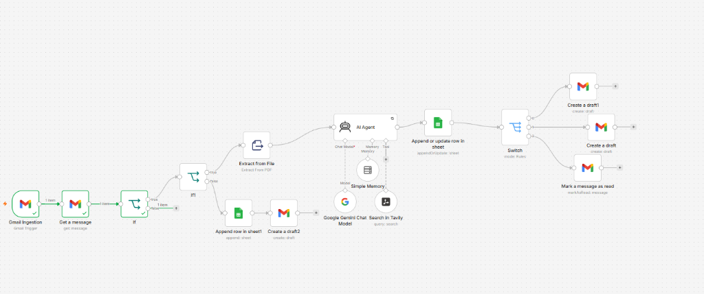
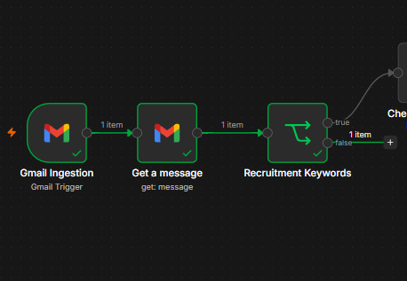
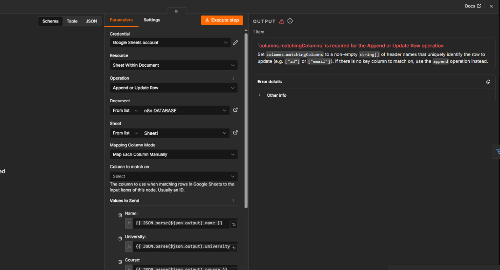
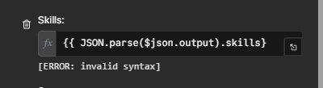
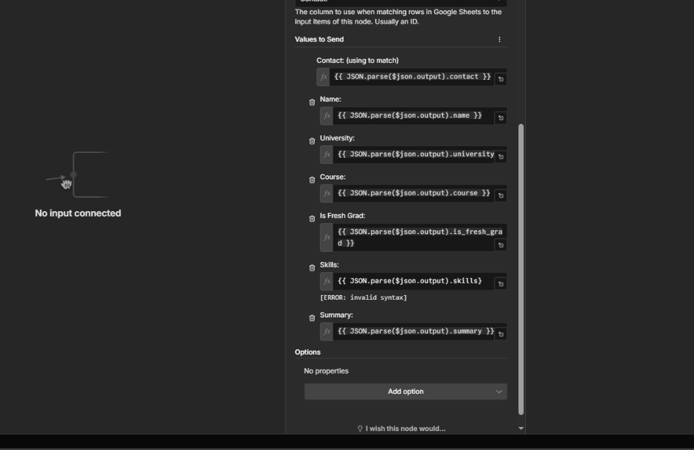
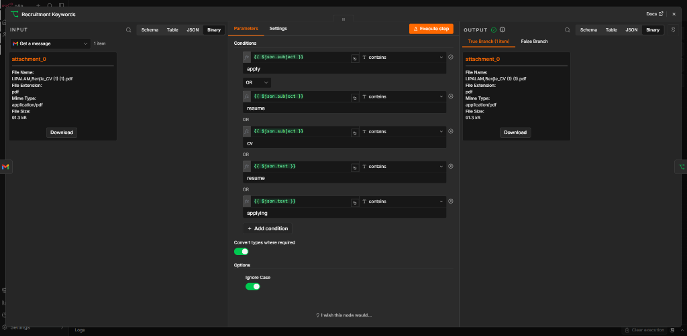
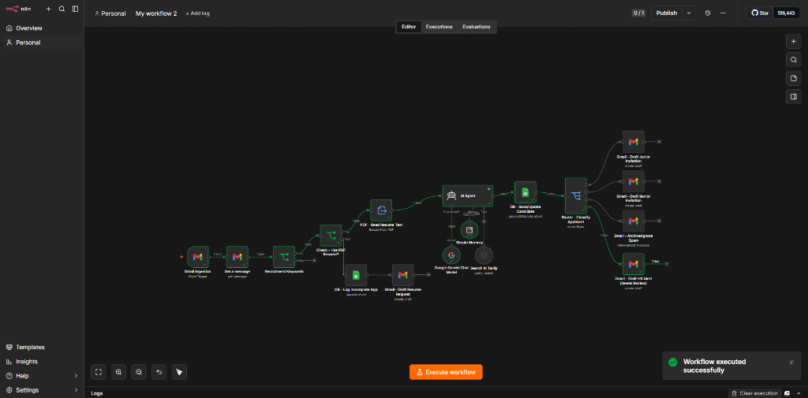
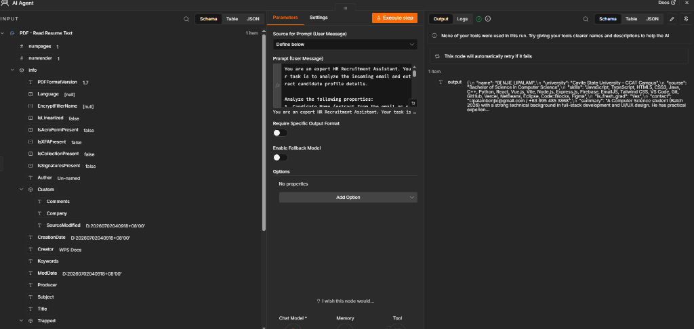

A behind-the-scenes build log — from a simple 5-node prototype to a resilient, multi-route recruitment pipeline. Every bug included.
This project is a recruiter AI agent that automatically screens incoming resumes from Gmail, extracts and structures candidate data with AI, logs it into a duplicate-free Google Sheets database, and drafts a tailored reply — all without manual intervention.

Getting this system to run reliably wasn't a straight line. Below are the key build steps in order, and the real errors I ran into along the way — with how I traced and fixed each one.
To avoid burning API calls on obvious spam, I added a keyword filter node that runs before the request ever reaches the AI Agent.
debug_log:My own legitimate resume submission was flagged as a false negative. I traced it to a case-sensitivity issue — the filter matched lowercase apply, but my email used Application. Fixed by enabling Ignore Case on the filter condition.

To prevent duplicate rows when a candidate emails more than once, I switched the Google Sheets node from a plain "Append" to an Append or Update Row operation.
debug_log:
n8n threw 'columns.matchingColumns' is required
— the node had no way to know which existing row to match
against. Resolved by setting
Contact as the
unique matching key, so the workflow now checks for an
existing candidate before inserting or updating.

While writing extracted data into the Skills field, n8n
returned an invalid syntax error.
The expression was missing a closing brace:
{{ JSON.parse($json.output).skills}. Adding the
second }} fixed the parsing instantly — a small
typo that took the whole branch down until I caught it.

After renaming several nodes to clean up the canvas, the Sheets node suddenly stayed grayed out and refused to run.
debug_log:
The parameters panel read No input connected.
The rename had visually shifted the canvas and silently
snapped the wire loose between the AI Agent node and the
Sheets node. Reconnecting the two resolved it — a reminder to
verify actual wire connections after any layout cleanup.

To verify the robustness of the entire pipeline under real conditions, I conducted two separate integration test runs:
First, I submitted a test email containing my own resume: LIPALAM_Benjie_CV.pdf. The smart spam filter recognized the keywords, bypassed the spam blocker, and extracted the text. The Gemini model parsed my contact info, school name, and skills perfectly, logging the data to the spreadsheet and generating a draft response in Gmail in under 5 seconds.

Second, I tested the spam block branch by sending an email with keyword triggers (apply cv check) but attaching a non-recruitment PDF report. The AI Agent analyzed the document context, flagged it as spam, and routed it to the **Gmail - Archive/Ignore Spam** node, completing the execution successfully by archiving the message automatically.

With all four issues resolved, here's what the system delivers today:
Routes replies automatically — Fresh Grad, Experienced, or flagged for human review.
Clean candidate data written to Sheets with zero duplicate entries.
Deployed on Railway to process applications instantly 24/7, even when local machines are offline.

This system runs reliably within its current scope, but it isn't "finished" — and I'd rather say so than oversell it. Here's what I'd tackle next for a production environment:
No failure monitoring. A failed PDF extraction or AI timeout currently fails silently — next: an error branch that alerts Telegram or Slack on any failed run.
Static classification logic. Fresh Grad / Experienced routing uses fixed criteria — next: a configurable rules sheet, reusable across multiple job openings.
No candidate scoring. The system sorts by category, not fit — next: an AI-generated match score (1–10) against job requirements.
Blunt keyword filter. Reduces API cost, but an oddly worded legitimate application could still slip through — next: a more generous fallback rule.